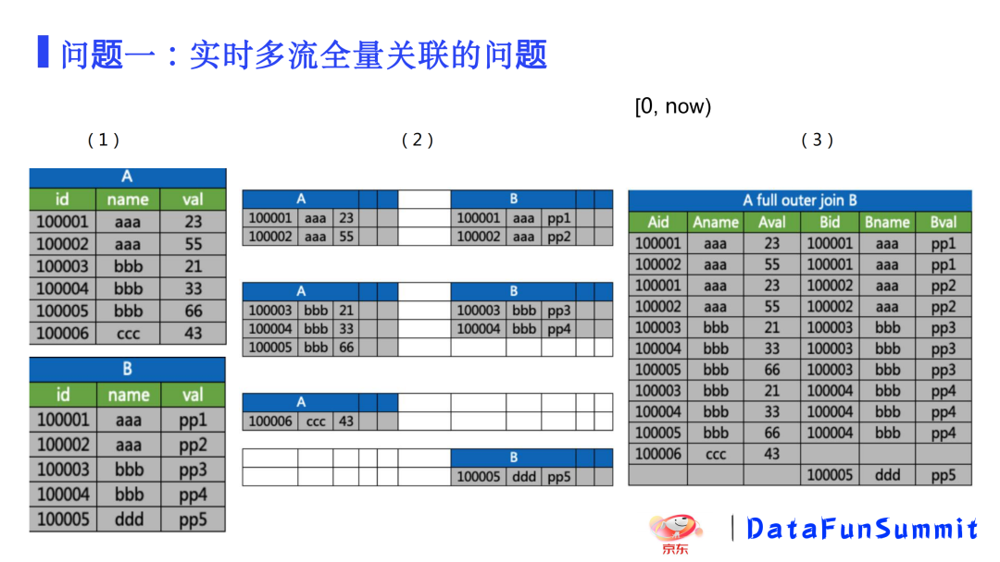
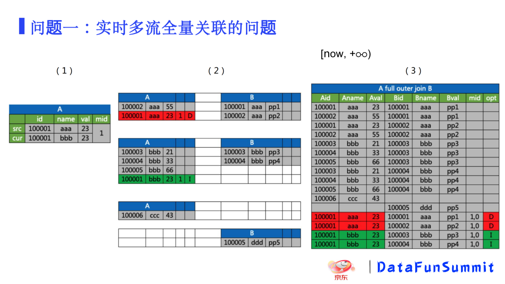
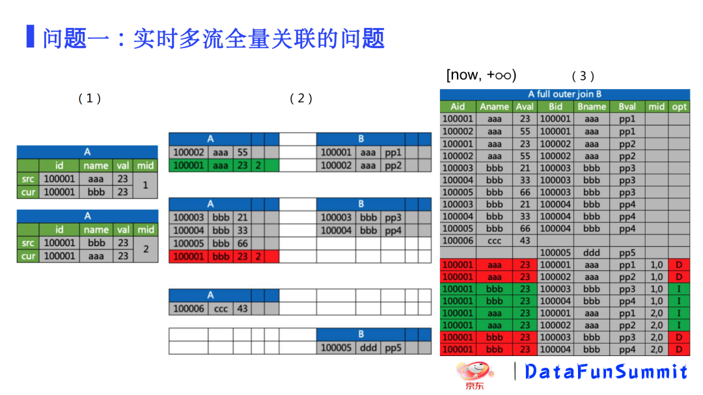
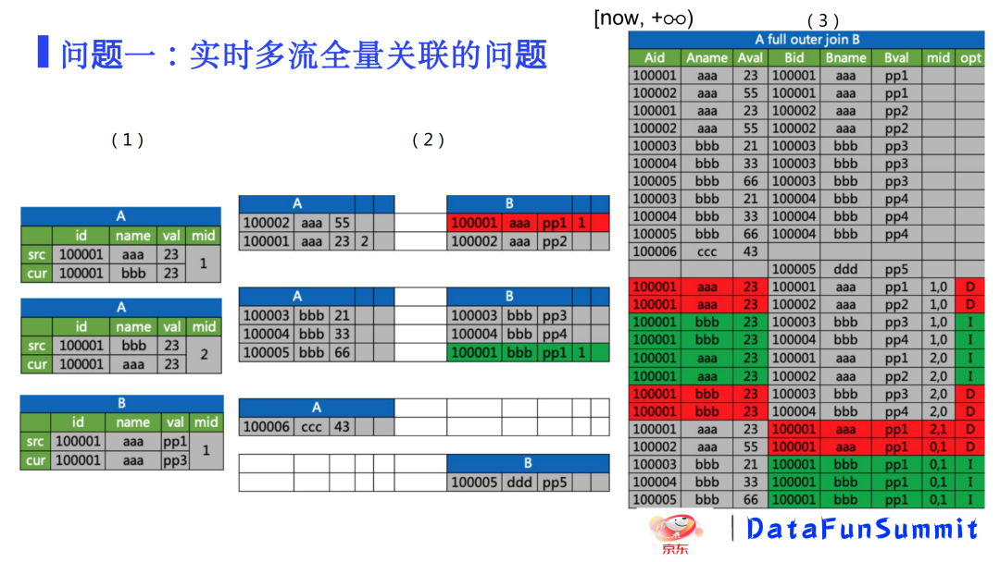
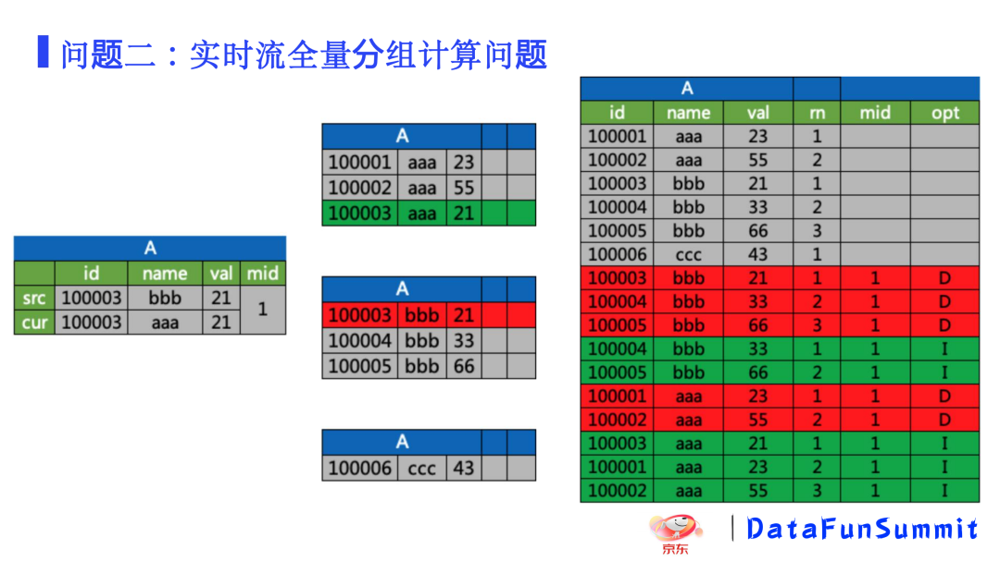
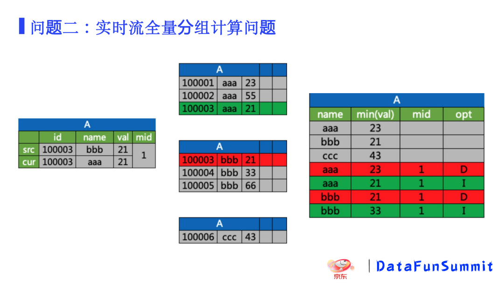
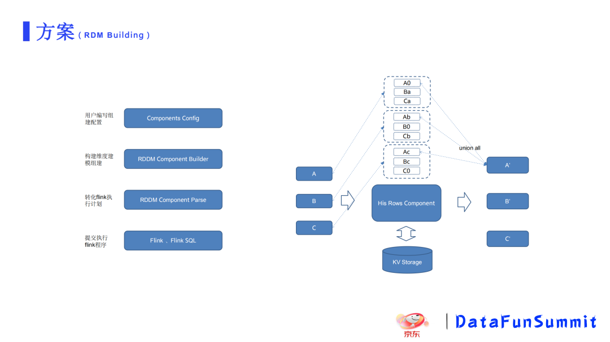
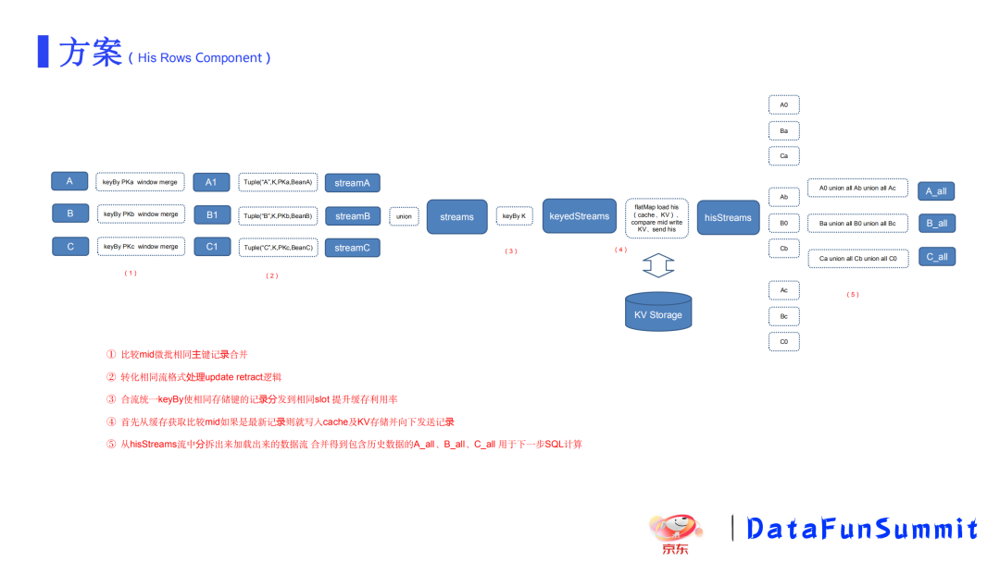

FlinkSQL在京东实时维度建模中的应用
转自公众号：DataFunTalk
http://mp.weixin.qq.com/s?__biz=MzU1NTMyOTI4Mw==&mid=2247567171&idx=2&sn=9c30c62c8802e4e06631559cb29bdd1a
在维度建模中有很多技术场景，本文挑选其中两个较难的场景来进行详细阐述。
问题一 实时多流全量关联的问题
select * from A full join B on A.name = B.name;此问题关联SQL比较简单，只有A流和B流两个实时流进行full join，但还可能涉及到其中有一流数据需要关联全量历史数据。
问题二 实时流全量分组计算的问题
select id,name,val,row_number() over(partition byname order by val) as rn from A;select name,min(val) from A group by k;
这个问题是实时流全量分组计算，涉及到分组排序值，或者分组求最小值等操作。
针对以上两个问题，似乎使用SQL处理起来比较简单，甚至我们可以直接用Flink SQL去完成。而实际直接使用以上Flink SQL计算存在若干问题。第一个问题是在最初生产数据的时候，可能并没有接入实时数据流。在实际场景中，往往需要在过程中接入实时数据。比如接入binlog之类的数据，其实是从当前时刻到未来这一时间段。例如商品SPU信息，一般需要有历史数据。只有获取历史数据，在订单数据流关联的时候，才能关联上这个订单所对应的历史信息。如果商品信息都是从产生后一段时间才接入数据，即从当前时刻才有的，那就无法获取到历史信息。第二个问题是状态数据，在用Flink SQL进行计算时，需要维护若干状态数据放到内存中，这种操作比较消耗内存。对于商品几年的历史数据，如果将状态数据存放在rocksdb中，经测试性能无法得到保障。基于此，如果直接用Flink SQL肯定无法解决。
以下分析怎么去解决此类问题。
首先看第一个问题，即实时多流全量关联的问题。
第一部分就是从最初时刻到当前时刻的时间区间，可以认为是历史状态数据。此处分别是A表和B表的记录。然后我们按照对应的关联键，如分别按name进行关联。通过name字段把它拆成几个部分，右侧是关联出来的结果表。当有一个消息进入，这个消息体可能是一个变更的消息记录。此处略过较为简单的新增或者删除操作，重点分析更新操作。

比如下图中消息mid=1，将A表里边的id=1000001这条记录里面aaa的记录值改成了bbb。但这个name字段是关联键，所以这就导致它影响了两个分组下的关联键下的记录。最终在A里面，它与B关联上的，之前的这两条记录(name=aaa)，在它被修改之后就不存在了，所以我们需要给下游发删除记录。

同时在A表的分组中，即在name=bbb分组下，这个关联键下会新增一条插入的记录。所以需要向下游下发这条新增记录跟B表关联到的这两条宽表记录。如果再有一条消息体过来，那么同样存在插入和删除记录。以此类推，B表变更逻辑相类似。在此过程中，当一条变更的消息体来了之后，需要考虑在实时维度建模里面去做哪些操作。例如在这个建模过程中需要变更的可能不只是当前的那个记录状态，之前的状态也有关联。而在进行分布式去计算的时候，不同的关联键也会分发到不同的节点上去计算。


再看第二个问题，全量分组计算问题。
类似地，当源端来了一个消息体，本来是一个原始状态值name=bbb，当它变更之后，现在变更成name=aaa，最终会影响分组排序的结果。原本是按照val=21,33,66 (name=aaa)依次排序，现在只有val=33,66 (name=bbb)，因为（id=100003）这条记录中的name值从bbb变成了aaa。所以在排序时row_number会发生变更，而下发的相关联的数据同样都会变更。当产生变更时，分组中最小值(min)是一样的，在涉及变更行为之后都需要更改。我们在进行计算时就需要考虑以上这些情况。因此每一次计算过程，都需要拿到A表的全量历史数据跟B表的全量历史数据去进行关联计算。


当然也可能存在A表发生变更，需要拿关联的B表的全量，这样可以把所有的数据都进行关联，包括之前这个状态将对应的B的全量取出来然后去做关联。以上这两类问题，通过画图和描述来看，似乎较为简单。但问题在于有数据流的变更，还需要还原出对应的状态表，然后由状态表关联结果，最终还原出对应的关联结果的流式变更记录，这类操作就涉及状态存储与读取的技术难点。
以上两类问题，如果进行全量数据关联操作，很快就能得到关联出的所有全量结果，然后去做计算，在性能上似乎也不用考虑太多，但实际操作存在一定难度。以下阐述了问题难点。
首先需要明确，问题难点准确来说是相对繁琐之处。实时维度建模有别于离线维度建模，需要考虑的地方很多，因此会增加实时维度建模的开发难度以及需要人为的干涉的地方。
难点一，如何获取到历史数据。
如果是使用Flink SQL来实现，需要保存全量的历史信息。既然我们无法保存状态，那就存到外设KV存储里面，存到外部的KV Storage。在这个过程中，需要考虑以什么结构去存储；如何去维护A、B、C三个表的数据，用这三个流表去做关联；这三个流表与各自对应的外设存储比如说A的HBase表跟B的HBase表跟C的HBase表或者与D的HBase表等等类似KV存储这种类型的；要对这几个表之间的关系进行组织；在组织关联出了结果之后，需要考虑在关联结果里面是否还存在时序问题。
如上描述的关联结果里面存在三个消息，当三个消息体来了之后，对应的有一组下发流。如id=100001对应的键，它存在多条记录，如果时序发生混乱，最终可能导致宽表的结果还原错误。那怎么来保证时序的正确性，如果直接用Flink SQL进行计算，可能需要创建一个HBase table source（类似table function）的方式去做关联。
难点二，如何提升性能。
如果直接使用Flink SQL进行计算，需要考虑如何获取数据包括IO操作，且如何更高效地去实现这个过程。关于提升性能，最直接地有两种途径，一是降低IO的请求次数，二是增加并发。
降低IO请求，具体实现方法是做业务逻辑过滤或者根据业务逻辑做一定计算，或者做一些请求合并，或者用一些批量请求的方式去发请求。另外是设置缓存，通过设置一个合理的缓存值，能够做到缓存有一个较高的命中率。同时还需要考虑是设置被动缓存还是主动缓存。
增加并发，具体需要考虑是使用异步IO，还是使用增加并行度、引擎优化等等。因为以上两个较为繁琐支出，所以开发难度相对较高，需要考虑的细节问题较多。如果直接使用Flink SQL，其代价也许比写Flink程序去做维度建模工作更大。以上就是使用Flink SQL做维度建模工作遇到的若干难题。
那如何去解决以上问题？首先考虑采用组件化的设计方式，把用户所需要的维度建模功能做成若干组件，用户可以直接通过组件化的配置，就能够完成维度建模的开发。这样达到了降低代码开发成本的目的。

其次是将计算逻辑使用Flink SQL来表达。因为SQL在数据开发过程中是一种通用性较强的方式，并且其学习成本或研发、维护等等成本相对较低。采用以上两种方式需要解决前文提到的难点，下面看具体方案。
这里构建了一个产品RDM Building用来完成维度建模构建工作。它主要分为三层（Components Config、RDDM Component Builder、RDDM Component Parse），首先用户可以写组件配置，然后构建器会根据配置生成对应的一些组件对象，接着组件对象通过RDDM Component Parse就会将对应的组件转化Flink SQL算子。
例如使用A、B、C三个流进行关联计算，它们都是通过同样一组key关联，其关联键是相同的，最终关联生成一个结果表。这类操作可以使用His Rows Component组件进行处理。
它负责的过程是将A、B、C流分别对应的KV存储里面存储的历史数据取出，拿到对应的关联历史数据，比如A流数据过来就取到对应的关联的B表跟C表的历史数据。同样的针对B流，会将关联的A流跟C流的历史信息也都取出。对于C表也是如此。这样需要关联的所有历史数据，再组合成对应的A'、 B'、C'，其种A'不仅包含了A当前的数据，还包含了A要跟其它流关联的、相关的历史数据。所以在A'、 B'、C'里面，不仅有A、B、C流数据，而且包含了对应的历史数据。
按照以上设计，实时流的历史数据可以一直保存，那就基本解决历史数据这个难点。还需要考虑的问题是cache随着时间增长存不下，或者因cache太大导致速度很慢。又或者使用rocksdb的方式发现性能较低，但同时缺乏rocksdb方面优化的专业能力。但可以相对较为成熟的KV存储，而且数据可能本身使用KV存储进行保存。那么直接使用KV存储就能解决历史数据问题。
下图可以看到His Rows Component组件的详细执行过程，我们以这个组件为例来进行展开分析。

首先，我们拿到A、B、C三个流表，拿到之后先根据其对应的组件去做keyBy操作，再去做窗口聚合。窗口聚合的功能是什么？在实际业务过程中，A表的业务数据在处理过程中可能存在事务操作。它的事务操作里面可能存在先签了一条记录，然后再把里面改了一下某一个值；也可能先删了一条记录，然后又插入了一条记录。这取决于业务系统的多样性操作，所以可能存在业务上只做了一次变动，但发了若干条消息对应的binlog。那就需要首先对其进行微批处理，来减少我们处理的记录数，然后处理生成A、B、C一一对应的三个流。
接着再把它们进行格式转换，转换成对应的tuple。比如相同的一个格式，可能是表名、分组键、主键以及转换成的统一的Bean结构。此处需要注意的问题是，对更新这种操作需要拆分。具体有两类，一类是插入的tuple，一类是删除的tuple，它会有对应两条记录，一条删除的一条新增的。在统一格式之后，再把它们union(合并)到同一个流，然后根据相同的关联键去做keyBy。这个过程中合流统一keyBy，是想用这种方式把所有的需要关联的流数据通过相同的键去做keyBy然后做分发，保证的结果是使相同存储键的记录分发到相同slot，以提升缓存利用率。从KV Storage获取数据，或者过程中使用的缓存的高命中率，包括缓存的有效性，以及缓存一致性，即最终同样的一个key一定会落到同一个slot上去计算。这样就能够保证不会存在多个slot上都存了同一个关联键的一些信息，从而可以避免不一致或先后问题。
得到keyBy之后的结果，下一步经过flatmap算子，可以把历史数据从cache缓存、KV存储中加载进来。加载进来之后再比较它们的消息的id，如果是最新记录则就写入cache及KV存储并向下发送记录。当A流来了，关联的是B流历史跟C流历史；当B流来了，同样会关联A流历史和C流历史。同理C流也是如此。
下一步把从hisStreams流中分拆加载出来的数据流，合并得到包含历史数据的A_all、B_all、C_all 中，并用于下一步SQL计算。这个功能是将A、B、C流映射成了A_all、B_all、C_all，即所有的SQL逻辑就都可以直接写Flink SQL并用这三个流表(A_all、B_all、C_all)去计算，如此就包含短时间内的历史数据在进行计算。当然如果缓存中有数据的话，就不需要从KV中加载。而且同样的key会发到同一个slot上，它的缓存的命中率是很高的。另外以上都是按关联键去存的，如果同时有A、B、C等多条消息来了之后，都会命中同一条KV存储的key，也会提升缓存命中率。
以上是具体实现的方案，下面是我们后续的规划。
目前在用户使用以上组件时，还存在较高的学习成本。后续我们可能会增加一个前端页面，可以直接生成基于类似流程图面板以及点击、拖拉拽等形式生成对应不同类型的组件。采用这种配置方式可以降低用户的学习成本，增加使用的便捷性。另外我们还要扩展底层对多种实时计算引擎的支持。现在采用RDDM Component Parse会把对应的组件转成Flink算子(keyBy、flatMap等)，但可能在某些应用场景下还会使用SparkStreaming，或其它实时计算引擎。针对这种场景，我们可以将其独立出来，供用户自由地选择实时计算引擎。在KV存储方面，目前以内部使用为主，暂时只支持HBase、redis这两类KV存储，也需要把这部分信息彻底地独立。
如果这个文章对你有帮助，不要忘记 「在看」 「点赞」 「收藏」 三连啊喂！